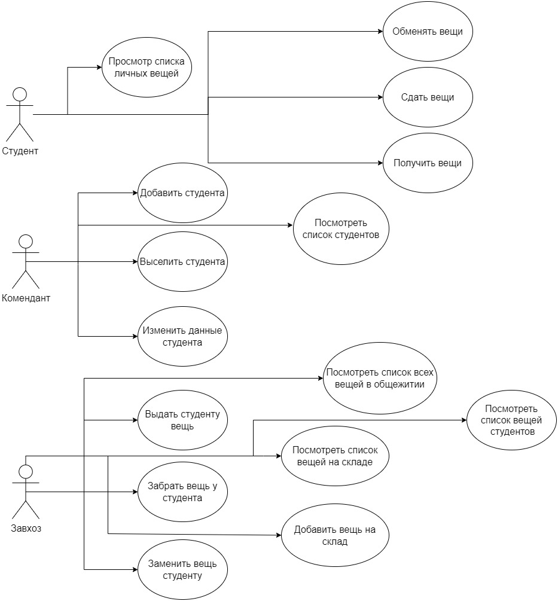
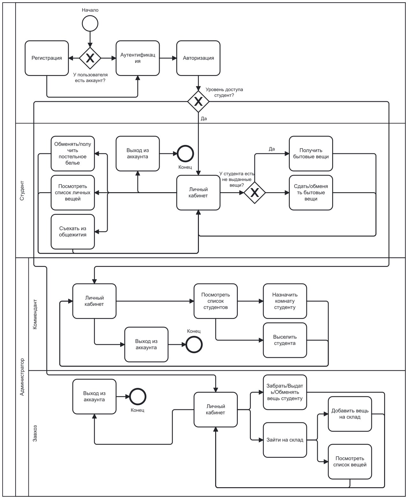

Проект "Система выдачи бытовых вещей студентам в общежитии"
Цель работы
Цель данного проекта - разработать веб-приложение, которое позволит студентам удобно сдавать и получать
бытовые вещи в общежитии, улучшая учет и организацию процесса.
Решаемая проблема/предоставляемая возможность
Проблема: В общежитии используется бумажный вариант ведения учета за бытовыми вещами, в
следствии чего, часто бывают несостыковки записей, указанных на бумаге с реальными.
Решение: Разработать веб-приложение для автоматического учета сдачи/выдачи вещей.
Краткий перечень функциональных требований
Регистрация и авторизация пользователей.
Нажатие кнопки "Получить вещь" для автоматической выдачи вещи.
Отображение списка доступных вещей для студентов.
Отслеживание истории полученных вещей.
Уведомления о получении новой вещи.
Use-case диаграмма системы

BPMN диаграмма основных бизнес-процессов

Примеры описания основных пользовательских сценариев
Получение вещей
Пользователь регистрируется и авторизуется в системе.
Открывается меню с возможностью обмена вещей и белья, а также просмотр списка вещей.
После нажатия на кнопку "Получить", система случайным образом выбирает вещь из доступных и выдает ее
пользователю.
Предмет автоматически добавляется в историю полученных предметов.